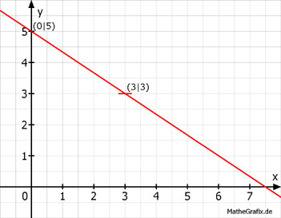

Lineare Funktionen Aufgabe 47 Ergänzen Sie die Wertetabellen für die Graphen der Funktionen: 2x + 3y - 15 = 0 2x + 3y - 15 = 0 |+15 2x + 3y = 15 |-3x 3y = 15 - 2x | :2 2 y = 5 - --- x 3 x 0 3 y 5 3 y(0) = 5 - 0 = 5 2 y(3) = 5 - --- * 3 = 5 - 2 = 3 3 